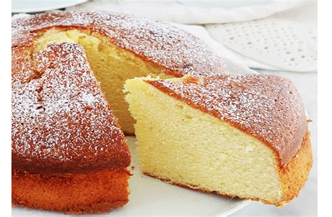

Pour 6 persone. La recette inratable pour un délicieuxgâteau au yaourt !Facile à doser : il suffit d'utiliser le pot de yaourt comme unité de mesure pour les autres ingrédients Durée totale: 35 minutes Difficulté : Très Facile Coût : Pas cher

Ingrédients :
1yaourt nature
1 sachet de levure en poudre (5,5g)
2½ pots de yaourt de farine
1½ pot de yaourt de sucre
½ pot de yaourt d'huile
10 g de beurre
3 œufs
1 sachet de sucre vanillé (7,5 g)
Préparation
Verser dans cet ordre dans un saladier, en mélangeant au fur et à mesure :
un pot de yaourt nature
la farine
le sucre
le sucre vanillé
Rajouter les 3 oeufs, mélanger.
Mettre l'huile, mélanger et ajouter le sachet de levure.
Mélanger encore, la pâte doit être lisse.
Beurrer un moule à manqué et y verser la pâte.
Mettre au four 30 min à 180°C (thermostat 6), en surveillant régulièrement.